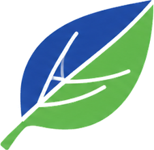

Accessible
Des petites exploitations familiales aux grandes structures : sans capteur à installer, avec l'imagerie Sentinel-2 gratuite.

AccueilNotre mission

Chaque agriculteur devrait pouvoir lire ses parcelles comme le voit un satellite. Lancez le scan d'une exploitation et suivez ce que Firmaty fait de vos données.
Chaque nouvelle image Sentinel-2 est analysée. La vigueur, l'eau et l'azote de chaque parcelle se dessinent, du rouge au vert.
L'image satellite descend sur le terrain avec le climat de la période et vos analyses de laboratoire. C'est ce croisement qui écarte les fausses alertes.
B4 baisse, mais c'est physiologique : personne ne se déplace. C1 manque de potassium : on corrige. D2 est sous surveillance. Voilà ce que nous mettons entre les mains de chaque agriculteur.
Exploitation de démonstration · scène 3D interactive
Notre conviction
L'agriculture de précision ne doit pas être réservée aux grandes structures. Ce que les satellites voient de vos parcelles, vous devez pouvoir le comprendre et l'utiliser, quelle que soit la taille de votre exploitation.
Notre mission
Fondée en 2026, Firmaty s'est donnée pour mission de rendre l'agriculture de précision accessible à tous, des petites exploitations familiales aux grandes structures agricoles.
Nous croyons que l'avenir de l'agriculture passe par une utilisation intelligente des données satellitaires et de l'intelligence artificielle. En combinant l'imagerie Sentinel-2 gratuite avec des algorithmes d'analyse avancés, nous permettons à chaque agriculteur de :

Notre ambition
Actuellement en phase pilote avec 20 exploitations au Maroc sur 200 hectares, Firmaty vise à accompagner plus de 1 000 fermes dans les deux prochaines années.
2026
La conviction devient une entreprise : rendre l'observation de la Terre utile à chaque exploitation.
Aujourd'hui
20 exploitations et 200 hectares suivis, pour éprouver le diagnostic sur le terrain, culture par culture.
D'ici deux ans
Étendre l'accompagnement aux exploitations familiales comme aux grandes structures, et démocratiser l'accès à l'agriculture de précision au Maroc.
Nos engagements
Des petites exploitations familiales aux grandes structures : sans capteur à installer, avec l'imagerie Sentinel-2 gratuite.
Chaque recommandation s'appuie sur des mesures datées : satellite, climat et laboratoire, croisés plutôt que lus séparément.
La bonne quantité d'eau et d'engrais, au bon endroit : produire plus en préservant les ressources.
Vos analyses et vos parcelles restent votre propriété. Nous en parlons ouvertement avant tout engagement.
Sur quoi nous nous appuyons
L'imagerie multispectrale gratuite du programme européen, en résolution 10 mètres, avec une revisite régulière.
Historique, temps réel et prévisions, rapportés au stade de chaque culture.
Vos analyses de sol, foliaires et d'eau, et des algorithmes qui recoupent les trois sources.
Nos ressources sur l'imagerie satellite et l'agriculture de précision →
Démonstration
Nous accompagnons aujourd'hui 20 exploitations au Maroc. Parlez-nous de la vôtre : nous analysons vos secteurs sur les mois écoulés, sans rien installer.
Rejoindre la phase pilote